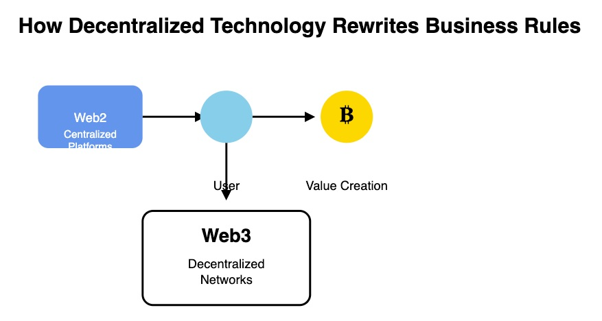

2 Web3’s Commercial Disruption
How decentralized technology rewrites business rules
The emergence of Web3 represents far more than a technological upgrade to existing internet infrastructure. At its core, Web3 fundamentally restructures the relationship between platforms, users, and value creation in ways that challenge the basic assumptions underlying modern commercial activity. While Web2 concentrated power and profits in the hands of platform owners, Web3 distributes both authority and economic benefits among all participants in digital ecosystems.
This transformation extends beyond simple technical improvements to encompass a complete rethinking of how business relationships function in digital environments. Where traditional platforms extract value from user interactions and merchant activities, Web3 systems create mechanisms for sharing value among all contributors to network effects. The implications reach into every aspect of modern commerce, from how businesses acquire customers to how individuals monetize their digital activities.
Understanding this disruption requires examining not just what Web3 technologies can do, but why they represent a necessary evolution beyond the limitations and contradictions that have emerged within centralized platform economies. The platform trap that currently constrains both businesses and consumers creates systemic inefficiencies that Web3 architectures are uniquely positioned to resolve.
2.1 The Platform Trap
Contemporary digital commerce operates through centralized platforms that have gradually concentrated enormous power over market access, customer relationships, and value distribution. These platforms initially attracted participants by offering valuable services: Amazon provided market access for sellers and convenience for buyers, Google offered free search and advertising tools, Facebook connected people across geographic boundaries. However, as these platforms achieved market dominance, their incentives shifted from serving participants toward extracting maximum value from their intermediary positions.
The mathematical structure of platform economics creates inherent conflicts between platform owners and other participants. Platforms generate revenue by capturing a percentage of transactions, advertising spending, or subscription fees flowing through their systems. This creates pressure to maximize the volume of value flowing through the platform while increasing the percentage captured by the platform owner. The result is a gradual squeeze on both merchants and consumers as platforms optimize for their own profitability rather than ecosystem health.
Consider the evolution of Amazon’s relationship with third-party sellers. Initially, Amazon charged modest fees and provided valuable services that genuinely helped merchants reach new customers. Over time, however, the platform has introduced increasingly complex fee structures, mandatory advertising requirements, and restrictive policies that effectively force merchants to surrender larger portions of their revenue to maintain market access. Merchants who achieved success on the platform often find themselves trapped: they cannot afford to leave because Amazon represents such a large portion of their sales, yet they cannot achieve sustainable profitability because Amazon’s fees consume most of their margins.
This dynamic extends beyond individual transactions to encompass data ownership and customer relationships. Platform merchants cannot access detailed customer information, cannot build direct relationships with buyers, and cannot transfer their customer base to alternative platforms. The platform owns all customer data and relationships, using this information asymmetry to maintain control over market access. Merchants become dependent on the platform’s algorithms, advertising systems, and policy decisions, with little recourse when these systems change in ways that damage their businesses.
The platform trap affects consumers as well, though often in less visible ways. While platforms provide convenience and selection, they also create filter bubbles, manipulate purchasing decisions through algorithmic recommendations, and gradually increase prices as they achieve market dominance. Consumers generate valuable data through their interactions with platforms, yet receive no compensation for this value creation. Instead, their data is sold to advertisers and used to optimize extraction of money from their wallets.
Perhaps most significantly, the platform model creates systematic underinvestment in ecosystem development and participant success. Since platforms profit from their intermediary position rather than from the success of ecosystem participants, they have limited incentives to help merchants improve their businesses or to provide consumers with genuinely optimal outcomes. The platform’s interests align with maintaining dependency and extracting value rather than creating conditions for broad-based prosperity among participants.

2.2 Data Sovereignty Revolution
Web3 technologies introduce the possibility of data sovereignty, fundamentally altering the balance of power between platforms and users. In current systems, every click, purchase, search, and interaction generates data that flows to platform owners who use this information to optimize their own revenue generation. Users have no visibility into how their data is collected, processed, or monetized, and receive no compensation for the value their activities create.
Decentralized identity systems enable individuals to own and control their digital identities across multiple platforms and applications. Rather than creating separate accounts for each service and surrendering personal information to each platform, users can maintain portable identities that they fully control. This shift has profound implications for how digital commerce functions, as it eliminates platforms’ ability to trap users through data lock-in effects.
When users own their data, they can choose which information to share with different services and under what conditions. They can grant temporary access permissions that can be revoked at any time. Most importantly, they can negotiate compensation for sharing valuable data or participating in data-generating activities. This creates market mechanisms for data exchange rather than the current system of uncompensated extraction.
The implications extend to customer relationships in commercial contexts. Merchants who interact with customers through Web3 systems can develop direct relationships without intermediary platforms controlling access. Customer data remains with customers, who can choose to share purchase history, preferences, and other valuable information directly with merchants they trust. This enables more genuine relationships between businesses and customers while eliminating the platform tax on these interactions.
Decentralized storage systems ensure that user data cannot be lost, corrupted, or manipulated by platform owners. Information stored on distributed networks remains accessible to users regardless of what happens to any particular platform or service provider. This creates genuine data portability, enabling users to move between services while maintaining their digital history and relationships.
The data sovereignty revolution also enables new forms of value creation through user participation. When users own their data and interactions, they can choose to monetize these assets directly rather than allowing platforms to capture all the value. This might involve selling data to researchers, participating in content creation that generates direct revenue, or contributing to network effects that create tokenized rewards.
2.3 From Consumer to Stakeholder
Traditional platform relationships cast users as consumers who purchase products or services in exchange for money, or as content creators who provide material in exchange for platform-mediated revenue sharing. Web3 systems enable a fundamental role transformation where users become stakeholders with ownership interests in the platforms and networks they help create and maintain.
This transformation occurs through token-based ownership systems that distribute economic rights to network participants based on their contributions to network value. Rather than working for platforms that capture most of the value from user activities, participants can earn ownership stakes in the networks they help build and maintain. These ownership stakes typically take the form of governance tokens that provide voting rights on network decisions and economic tokens that entitle holders to shares of network revenue.
The stakeholder model aligns incentives between platforms and participants in ways that platform-based systems cannot achieve. When users own portions of the networks they participate in, they benefit directly from network growth and success. This creates powerful incentives for users to contribute high-quality content, provide helpful feedback, recruit new participants, and support network development in other ways. The result is typically faster growth and higher-quality outcomes than centralized platforms can achieve through purely extractive relationships.
Governance rights associated with stakeholder positions enable genuine democratic participation in platform development and policy decisions. Rather than accepting whatever changes platform owners decide to implement, stakeholders can propose modifications, vote on important decisions, and collectively guide network evolution. This creates systems that remain responsive to participant needs rather than optimizing solely for owner benefit.
The economic implications of stakeholder participation compound over time as successful networks grow in value. Early participants who help establish and develop networks can see substantial appreciation in their ownership stakes as networks achieve scale and adoption. This creates incentives for long-term commitment and high-quality participation rather than the short-term extraction that characterizes many platform relationships.
Furthermore, stakeholder models enable risk sharing and collaborative investment in network development. When participants have ownership stakes, they become willing to invest time, money, and effort in network improvements because they will share in the benefits of these investments. This can accelerate innovation and development compared to systems where only platform owners benefit from network improvements.
2.4 Smart Contract Commerce
Smart contracts represent one of the most significant innovations in Web3 technology, enabling automated execution of agreements without requiring trusted intermediaries. In commercial contexts, smart contracts can automate payment processing, enforce service agreements, distribute revenue shares, and manage complex multi-party transactions with mathematical precision and complete transparency.
The elimination of intermediaries through smart contract automation reduces transaction costs while increasing reliability and speed of execution. Traditional commercial transactions often require banks, payment processors, escrow services, and other intermediaries to ensure that all parties fulfill their obligations. Each intermediary adds cost, complexity, and potential points of failure to the transaction process. Smart contracts can replace many of these intermediaries with automated code that executes predefined logic when specified conditions are met.
Consider a typical e-commerce transaction involving a merchant, customer, payment processor, and shipping company. Traditional systems require multiple intermediaries to coordinate these interactions, with each taking fees and introducing delays. A smart contract system could automatically process payment when goods are delivered, distribute appropriate portions to the merchant and shipping company, handle tax calculations, and trigger customer service processes if problems arise. The entire transaction executes according to predefined rules without requiring manual intervention or intermediary coordination.
Smart contracts also enable more sophisticated commercial arrangements that would be impractical to manage through traditional systems. Revenue sharing agreements between multiple parties can be automated to ensure accurate and timely distribution of funds according to complex formulas. Subscription services can automatically adjust pricing based on usage patterns or market conditions. Insurance claims can be processed automatically when triggering events occur. These capabilities enable new business models that were previously too complex or expensive to implement.
The transparency of smart contract systems builds trust between commercial partners by making all transaction logic visible and verifiable. Participants can examine the code that governs their interactions, ensuring that automated systems will behave as expected. This transparency reduces disputes and enables cooperation between parties who might not otherwise trust each other to honor complex agreements.
Smart contracts also enable programmable money that can automatically enforce spending rules, savings goals, and investment strategies. Rather than relying on individual discipline or third-party financial services, individuals can create automated systems that allocate income according to predetermined rules, invest in diversified portfolios, and execute complex financial strategies without ongoing manual management.
2.5 The Death of Middlemen
Web3 technologies enable direct peer-to-peer transactions that eliminate many traditional intermediary roles while creating new forms of value creation through network participation. Rather than paying intermediaries to facilitate transactions, participants can interact directly while contributing to shared infrastructure that serves their collective interests.
Decentralized finance protocols demonstrate how intermediary elimination works in practice. Traditional banking requires customers to deposit money with financial institutions that then lend these funds to borrowers while capturing the interest rate spread. DeFi protocols enable depositors to lend directly to borrowers through automated systems, often earning higher returns while borrowers pay lower rates. The intermediary profits are eliminated, with the savings shared between lenders and borrowers.
Similar dynamics apply to many other commercial sectors. Content creators can distribute their work directly to audiences through decentralized platforms, keeping larger portions of revenue that would otherwise flow to platform intermediaries. Freelancers can connect with clients through peer-to-peer networks that charge minimal fees compared to traditional freelancing platforms. Merchants can sell directly to consumers through decentralized marketplaces that take smaller commissions than centralized platforms.
The elimination of intermediaries does not mean the elimination of valuable services that intermediaries traditionally provided. Instead, these services become distributed among network participants or automated through smart contracts. Quality assurance, dispute resolution, payment processing, and other intermediary functions continue to exist but are provided through decentralized mechanisms rather than centralized intermediaries.
This transition creates opportunities for individuals to earn income by providing specific services within decentralized networks rather than working for intermediary companies. Network participants can earn rewards for content moderation, dispute resolution, quality verification, customer service, and many other functions that were previously performed by platform employees. This creates more flexible and often more lucrative opportunities for individuals while reducing the overhead costs associated with centralized intermediary organizations.
The death of traditional intermediaries also enables more direct relationships between producers and consumers, leading to better price discovery and more efficient markets. When multiple layers of intermediaries are removed, both producers and consumers can capture larger portions of the value created through their interactions. This typically results in lower prices for consumers and higher revenues for producers, with the difference representing the elimination of intermediary extraction.
2.6 Implications for Business Strategy
The transition to Web3 commerce requires fundamental changes in how businesses approach customer acquisition, relationship management, and value creation. Companies that understand and adapt to these changes will find significant competitive advantages, while those that cling to platform-dependent strategies may find themselves increasingly disadvantaged.
Customer acquisition in Web3 environments focuses on providing genuine value and building trust rather than purchasing attention through advertising platforms. Since Web3 users own their data and identities, they can more easily evaluate and compare different options. Businesses must compete on the basis of actual value provided rather than marketing sophistication or advertising spending power.
Relationship management shifts from platform-mediated interactions toward direct engagement with customers who own their data and identities. This enables deeper, more authentic relationships but requires businesses to provide ongoing value rather than relying on platform lock-in effects to maintain customer loyalty. Companies that excel at creating genuine value for customers will thrive, while those that depend on information asymmetries or switching costs will struggle.
Value creation opportunities expand significantly in Web3 environments as businesses can participate in network effects and token economies rather than simply extracting profits from transactions. Companies can create and participate in decentralized networks that grow in value as they attract more participants. This can provide exponential growth opportunities that are not available through traditional business models.
The Web3 transition represents both a technological shift and a philosophical evolution toward more equitable and efficient forms of digital commerce. As we will explore in Chapter 3, the practical implementation of these principles requires systematic approaches to platform design, token economics, and community governance. The six pillars of OnChain Commerce provide a framework for understanding how these abstract concepts translate into concrete business systems that can operate at scale while maintaining the benefits of decentralization and participant ownership.